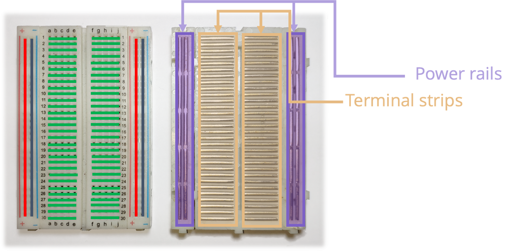

We're going to wire up a circuit on a breadboard, then write MicroPython code to control LEDs just like a real traffic light.
A lot of Computing is about programming computers to get them to do things in the 'software' world, but we also need to program systems to do stuff in the real world that takes input from sensors and performs actions (like a thermostat turning on the heating when the temperature is too low, or a smoke alarm making a noise when it detects...well, smoke)
No previous experience with electronics or Python is needed — every step is explained from scratch.
A breadboard lets you build circuits without soldering. The holes are connected in rows — components placed in the same row are electrically joined. The long rails down each side (marked + and −) run the full length of the board and are used for power and ground.

An LED (Light Emitting Diode) only allows current to flow in one direction. It has two legs: the longer leg is the anode (+) and must connect toward the positive supply (a GPIO pin), and the shorter leg is the cathode (−) and must connect toward ground (GND).
If an LED doesn't light up, try flipping it around — it's probably in the wrong way.
Follow the wiring table below carefully. Place the Pico across the centre gap of the breadboard so its pins align with the rows on each side. Connect each LED with a resistor between the cathode and the GND rail.
| LED | LED anode (+, long leg) | Resistor connects | LED cathode (−, short leg) |
|---|---|---|---|
| Red | → GP15 | between cathode and GND rail | → GND rail |
| Yellow | → GP14 | between cathode and GND rail | → GND rail |
| Green | → GP13 | between cathode and GND rail | → GND rail |
| GND rail | → Any GND pin on the Pico (e.g. pin 38) | ||
Thonny is the code editor you'll use to write and run your program on the Pico. Follow these steps to get connected.
>>> prompt in the Shell panel at the bottom. The Pico is ready!print("Hello, Pico!") in the Shell and press Enter. If you see the message printed back, everything is working.
Before writing the full program, test each LED individually. Create a new file in Thonny, type the code below, and click the green Run button. Each LED should turn on briefly then off.
# Test all three LEDs one by one from machine import Pin import utime # Set up each LED pin as an output red = Pin(15, Pin.OUT) yellow = Pin(14, Pin.OUT) green = Pin(13, Pin.OUT) # Test red red.value(1) # turn on utime.sleep(1) red.value(0) # turn off # Test yellow yellow.value(1) utime.sleep(1) yellow.value(0) # Test green green.value(1) utime.sleep(1) green.value(0) print("LED test complete!")
Now for the main event. A UK traffic light follows this sequence: Green → Yellow → Red → Red+Yellow → Green. The code below runs this sequence in a continuous loop.
Create a new file, type (or copy) the code below, then save it as traffic_light.py on the Pico and click Run.
# Traffic Light Simulator — Raspberry Pi Pico # Controls red, yellow and green LEDs on GP15, GP14, GP13 from machine import Pin import utime # --- Setup --- red = Pin(15, Pin.OUT) yellow = Pin(14, Pin.OUT) green = Pin(13, Pin.OUT) def all_off(): """Turn all LEDs off.""" red.value(0) yellow.value(0) green.value(0) # --- Main loop --- print("Traffic light running... press Stop to end.") while True: # GREEN — go! all_off() green.value(1) utime.sleep(3) # YELLOW — get ready to stop all_off() yellow.value(1) utime.sleep(1) # RED — stop! all_off() red.value(1) utime.sleep(3) # RED + YELLOW — get ready to go yellow.value(1) utime.sleep(1)
while True: loop runs forever. To stop it, click the Stop/Restart button (red square) in Thonny, or press Ctrl + C in the Shell.
Finished? Try one of these challenges to go further.
Change the timing so the red phase lasts 5 seconds and the green phase only lasts 2 seconds.
Add a print() statement inside each phase so the Shell shows which light is currently on.
Make the yellow LED flash 3 times before switching to red, instead of staying on solid.
Store the timings in variables at the top of your code so they're easy to change in one place.
Use a push-button wired to a GPIO input to simulate a pedestrian crossing — pressing the button should trigger a red phase.
Wire up a second set of LEDs to represent the opposing traffic light, so when one is green the other is red.
| Concept | What it means |
|---|---|
Pin(15, Pin.OUT) | Sets GP15 as a digital output that the code can control |
.value(1) | Sets the pin HIGH (3.3 V) — turns the LED on |
.value(0) | Sets the pin LOW (0 V) — turns the LED off |
utime.sleep(n) | Pauses the program for n seconds |
while True: | Loops the indented code block forever |
def fn(): | Defines a reusable function you can call by name |